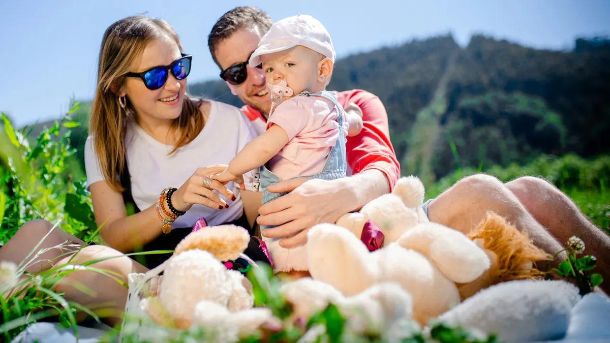
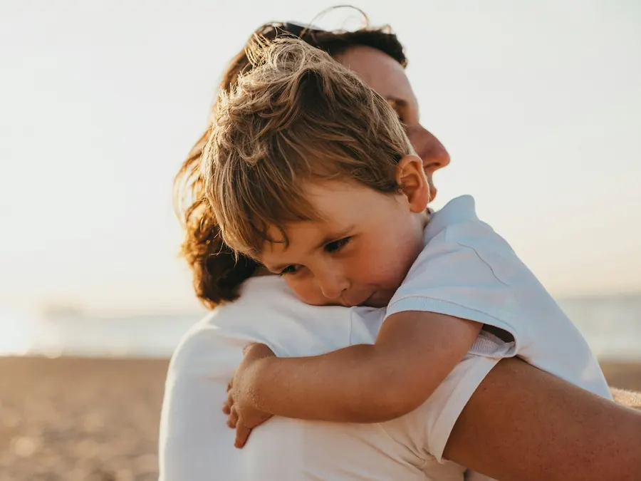
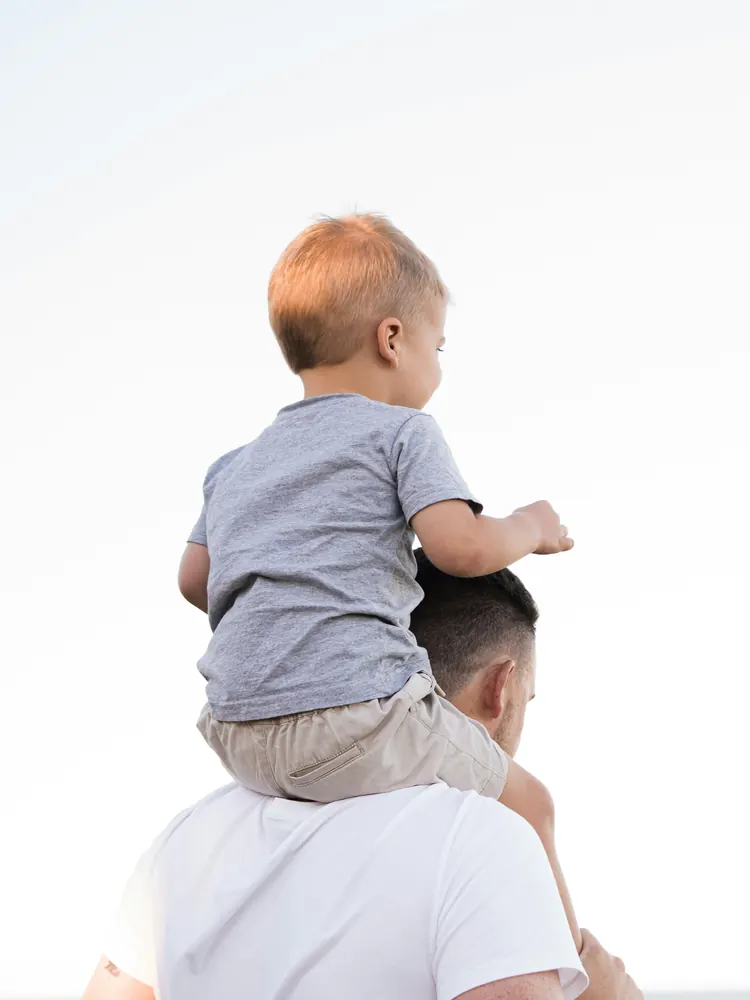

Dla kogo jest ten program?

Każda rodzina może znaleźć się w trudnej sytuacji
Problemy rodzinne mają różne przyczyny i przebieg. Czasami zaczynają się od narastających nieporozumień, innym razem od rozstania, rozwodu lub konfliktu, który z czasem obejmuje również dzieci.
Program kierujemy do rodziców, którzy potrzebują wsparcia w budowaniu relacji z dzieckiem, przechodzą przez trudny okres w życiu rodzinnym lub zmagają się z problemami wymagającymi pomocy psychologicznej i prawnej.
Rodzice wychowujący dzieci samodzielnie
Codzienna odpowiedzialność za wychowanie dziecka, podejmowanie decyzji i godzenie obowiązków zawodowych z rodzicielstwem może być dużym obciążeniem. Pomagamy szukać sposobów na radzenie sobie z trudnościami i budowanie stabilnego środowiska dla dziecka.
Rodzice w separacji i w trakcie rozwodu
Rozstanie rodziców nie musi oznaczać rozpadu więzi rodzinnych. Wspieramy rodziców w przechodzeniu przez ten trudny okres, porządkowaniu emocji i szukaniu sposobów na ograniczenie konfliktu, który może negatywnie wpływać na dziecko.
Rodzice pozostający w konflikcie rodzicielskim
Długotrwałe spory, problemy komunikacyjne i brak porozumienia w sprawach dotyczących dziecka mogą utrudniać codzienne funkcjonowanie całej rodziny. Pomagamy spojrzeć na sytuację z perspektywy potrzeb dziecka i szukać rozwiązań ograniczających napięcia.
Rodzice doświadczający utrudniania kontaktów z dzieckiem
Ograniczanie kontaktów, osłabianie więzi i wciąganie dziecka w konflikt między dorosłymi to sytuacje wymagające szczególnej uwagi. Wspieramy rodziców w rozpoznawaniu problemów, rozumieniu ich konsekwencji i poszukiwaniu odpowiednich form pomocy.
Rodzice uczestniczący w postępowaniach sądowych
Sprawy dotyczące kontaktów, opieki nad dzieckiem, alimentów czy władzy rodzicielskiej wiążą się często z dużym stresem i poczuciem niepewności. Pomagamy lepiej zrozumieć procedury i dostępne możliwości prawne.
Jak pomagamy?
Pięć obszarów wsparcia. Jeden wspólny cel – dobro dziecka i rodziny.
Każda sytuacja rodzinna jest inna. Dlatego nie ograniczamy pomocy do jednego rodzaju działania. Program obejmuje pięć obszarów, które odpowiadają na najważniejsze potrzeby rodziców znajdujących się w trudnej sytuacji.

Obszar 1
Wsparcie psychologiczne w budowaniu relacji z dzieckiem
Dobra relacja nie kończy się na codziennej obecności. Zaczyna się od wzajemnego zrozumienia.
Rodzicielstwo to nie tylko troska o bezpieczeństwo i zaspokajanie codziennych potrzeb dziecka. To również budowanie więzi, umiejętność rozmowy, dostrzeganie emocji i tworzenie przestrzeni, w której dziecko czuje się ważne i akceptowane.
Wspieramy rodziców w rozwijaniu kompetencji wychowawczych, rozumieniu zachowań dzieci i budowaniu relacji opartej na zaufaniu. Pokazujemy, jak codzienne postawy dorosłych wpływają na rozwój emocjonalny dziecka i jego poczucie bezpieczeństwa.
1.1Rozmowa i komunikacja z dzieckiem
Dziecko potrzebuje rodzica, który nie tylko mówi, ale przede wszystkim potrafi słuchać. Pokazujemy, jak rozmawiać o emocjach, trudnościach i codziennych sprawach, aby dziecko czuło się wysłuchane i traktowane poważnie.
Poruszamy zagadnienia:
- jak rozmawiać z dzieckiem na różnych etapach rozwoju;
- jak słuchać, aby dziecko chciało dzielić się swoimi przeżyciami;
- jak reagować na złość, smutek i wycofanie;
- jak rozwiązywać nieporozumienia bez niepotrzebnej eskalacji;
- jak odbudowywać zaufanie po trudnych doświadczeniach.
1.2Budowanie więzi i poczucia bezpieczeństwa
Silna więź rodzica z dzieckiem powstaje w codziennych sytuacjach. Nie wymaga wyjątkowych okoliczności, lecz uważności, przewidywalności i zainteresowania światem dziecka.
Pomagamy rodzicom zrozumieć:
- jak budować bliskość i wzajemne zaufanie;
- dlaczego regularny, wartościowy wspólny czas jest tak ważny;
- jak wzmacniać poczucie własnej wartości dziecka;
- jak reagować na potrzeby emocjonalne;
- jak zapewniać dziecku stabilność w zmieniających się okolicznościach.
1.3Trudności wychowawcze i emocje dziecka
Problemy z zachowaniem często są sygnałem, że dziecko przeżywa coś, z czym nie potrafi sobie poradzić. Zamiast koncentrować się wyłącznie na samym zachowaniu, warto zrozumieć jego przyczyny.
Omawiamy między innymi:
- trudności z przestrzeganiem zasad;
- wybuchy złości i zachowania impulsywne;
- wycofanie i problemy w relacjach z rówieśnikami;
- lęk, niepewność i obniżone poczucie własnej wartości;
- sposoby wspierania dziecka w trudnych sytuacjach.
1.4Rodzic również potrzebuje wsparcia
Zmęczenie, stres i poczucie przeciążenia mogą wpływać na sposób, w jaki reagujemy na potrzeby dziecka. Dbanie o własną równowagę emocjonalną nie jest przejawem egoizmu. Jest ważnym elementem odpowiedzialnego rodzicielstwa.
Pomagamy rodzicom lepiej rozumieć własne emocje, rozpoznawać przeciążenie i szukać sposobów na odzyskanie równowagi.
1.5Edukacja i rozwijanie kompetencji rodzicielskich
Wiedza pomaga lepiej rozumieć dziecko i podejmować bardziej świadome decyzje wychowawcze.
W ramach programu rozwijamy również działania edukacyjne, w tym szkolenia i spotkania online poświęcone relacjom rodzinnym, rozwojowi dzieci i wyzwaniom współczesnego rodzicielstwa.
Obszar 2
Wsparcie psychologiczne w sytuacji rozstania i konfliktu rodzicielskiego
Rozstanie rodziców nie powinno oznaczać rozpadu świata dziecka.
Separacja, rozwód i długotrwałe konflikty między rodzicami należą do najtrudniejszych doświadczeń, z jakimi może mierzyć się rodzina. W takich sytuacjach emocje często utrudniają spokojną ocenę sytuacji, a dziecko może znaleźć się w centrum sporu, którego nie powinno być uczestnikiem.
Wspieramy rodziców w zrozumieniu psychologicznych konsekwencji konfliktu, rozpoznawaniu potrzeb dziecka i poszukiwaniu sposobów na ograniczenie jego negatywnego wpływu na życie rodzinne.
2.1Rozstanie i rozwód – jak przejść przez trudny okres?
Rozpad związku oznacza konieczność zmierzenia się z wieloma zmianami. Rodzice muszą odnaleźć się w nowej rzeczywistości, jednocześnie zapewniając dziecku poczucie stabilności.
Poruszamy zagadnienia:
- jak radzić sobie z emocjami po rozstaniu;
- jak rozmawiać z dzieckiem o rozwodzie;
- jak przygotować dziecko na zmiany w codziennym życiu;
- jak oddzielić konflikt partnerski od odpowiedzialności rodzicielskiej;
- jak budować nowe zasady współpracy po rozstaniu.
2.2Konflikt między rodzicami a dobro dziecka
Długotrwały konflikt może sprawić, że dziecko zaczyna odczuwać presję opowiedzenia się po jednej ze stron. Może mieć poczucie winy, lęk przed odrzuceniem lub przekonanie, że odpowiada za sytuację dorosłych.
Pomagamy rodzicom zrozumieć:
- czym jest konflikt lojalnościowy;
- jak nie angażować dziecka w spory dorosłych;
- dlaczego negatywne wypowiedzi o drugim rodzicu mogą szkodzić dziecku;
- jak unikać wykorzystywania dziecka jako pośrednika;
- jak chronić jego poczucie bezpieczeństwa.
2.3Komunikacja między rodzicami po rozstaniu
Zakończenie związku nie kończy odpowiedzialności za wspólne rodzicielstwo. Nawet jeśli relacje między dorosłymi są trudne, dziecko nadal potrzebuje ich zaangażowania.
Omawiamy:
- jak rozmawiać z drugim rodzicem w sytuacji konfliktu;
- jak ustalać zasady dotyczące dziecka;
- jak ograniczać niepotrzebne spory;
- jak prowadzić komunikację w sposób spokojny i rzeczowy;
- jak oddzielać osobiste urazy od spraw związanych z wychowaniem.
2.4Ograniczanie kontaktów i osłabianie więzi z dzieckiem
Utrudnianie kontaktów z jednym z rodziców może prowadzić do stopniowego osłabiania więzi rodzinnych. Szczególnie trudna jest sytuacja, w której dziecko zaczyna odczuwać presję emocjonalną związaną z relacją z drugim rodzicem.
Pomagamy rodzicom rozpoznawać niepokojące sytuacje, rozumieć możliwe mechanizmy psychologiczne i szukać sposobów ochrony relacji z dzieckiem.
Poruszamy między innymi:
- mechanizmy konfliktu lojalnościowego;
- zachowania mogące osłabiać więź dziecka z rodzicem;
- emocjonalne konsekwencje ograniczania kontaktów;
- znaczenie bezpiecznej i przewidywalnej relacji;
- możliwości uzyskania dalszej pomocy psychologicznej i prawnej.
2.5Odbudowywanie relacji z dzieckiem
Utrata bliskości nie zawsze oznacza, że więź została bezpowrotnie zerwana. Odbudowa relacji wymaga jednak czasu, cierpliwości i uwzględnienia emocjonalnych potrzeb dziecka.
Wspieramy rodziców w poszukiwaniu sposobów na:
- stopniowe odbudowywanie zaufania;
- nawiązywanie kontaktu bez wywierania presji;
- rozumienie emocji i zachowań dziecka;
- tworzenie bezpiecznej przestrzeni do rozmowy;
- wzmacnianie relacji w codziennych sytuacjach.
Obszar 3
Pomoc prawna w sprawach rodzinnych
Znajomość swoich praw pomaga podejmować świadome decyzje.
Sprawy rodzinne dotyczące dzieci bywają skomplikowane i długotrwałe. Rodzice często nie wiedzą, jakie mają możliwości prawne, jak przygotować się do postępowania sądowego ani jak ocenić otrzymane dokumenty.
W ramach programu rozwijamy dostęp do informacji i konsultacji prawnych dotyczących najważniejszych zagadnień prawa rodzinnego. Pomagamy rodzicom lepiej rozumieć procedury, dokumentację i dostępne rozwiązania.
3.1Analiza opinii OZSS
Opinie Opiniodawczych Zespołów Sądowych Specjalistów mogą odgrywać istotną rolę w sprawach dotyczących dzieci i wykonywania władzy rodzicielskiej.
Pomagamy rodzicom zrozumieć znaczenie tych dokumentów oraz zwrócić uwagę na kwestie wymagające szczególnej analizy.
W ramach tego obszaru przewidujemy:
- omówienie struktury i treści opinii;
- wyjaśnienie zastosowanych metod diagnostycznych;
- analizę sposobu przedstawienia sytuacji rodzinnej;
- identyfikację ewentualnych niejasności i niespójności;
- wskazanie zagadnień, które mogą wymagać konsultacji ze specjalistą;
- omówienie możliwych dalszych działań prawnych.
3.2Kontakty z dzieckiem
Prawo do utrzymywania kontaktów z dzieckiem jest niezależne od władzy rodzicielskiej. Problemy w realizacji kontaktów mogą jednak prowadzić do długotrwałych sporów i pogłębiania konfliktu.
Wyjaśniamy:
- jak uregulować kontakty z dzieckiem;
- jak wygląda postępowanie dotyczące ustalenia kontaktów;
- jakie znaczenie mają orzeczenia sądowe;
- jak postępować w przypadku utrudniania kontaktów;
- jakie możliwości prawne istnieją w przypadku niewykonywania orzeczeń.
3.3Władza rodzicielska i opieka nad dzieckiem
Rozstanie rodziców nie oznacza automatycznej utraty władzy rodzicielskiej przez któregokolwiek z nich. W praktyce jednak ustalenie sposobu wykonywania opieki może prowadzić do wielu nieporozumień.
Omawiamy:
- czym jest władza rodzicielska;
- czym różni się władza rodzicielska od kontaktów z dzieckiem;
- jakie są możliwości uregulowania opieki;
- na czym polega opieka naprzemienna;
- jakie okoliczności sąd bierze pod uwagę przy podejmowaniu decyzji.
3.4Alimenty i obowiązek utrzymania dziecka
Ustalanie wysokości alimentów i podział kosztów utrzymania dziecka to częste źródło konfliktów między rodzicami.
Przybliżamy:
- zasady ustalania wysokości alimentów;
- znaczenie usprawiedliwionych potrzeb dziecka;
- możliwości finansowe rodziców;
- zasady zmiany wysokości alimentów;
- wpływ sposobu sprawowania opieki na kwestie utrzymania dziecka.
3.5Przygotowanie do postępowania sądowego
Postępowanie sądowe jest dla wielu rodziców źródłem dużego stresu. Brak znajomości procedur może dodatkowo potęgować poczucie bezradności.
Pomagamy zrozumieć:
- jak przygotować dokumentację;
- jakie znaczenie mają dowody w sprawach rodzinnych;
- jak wygląda przebieg postępowania;
- jakie prawa i obowiązki mają uczestnicy postępowania;
- kiedy warto skorzystać z pomocy adwokata lub radcy prawnego.
3.6Konsultacje prawne
Rodzice mogą potrzebować indywidualnego omówienia swojej sytuacji. Dlatego rozwijamy możliwość konsultacji z osobami posiadającymi odpowiednie przygotowanie prawnicze.
Zakres konsultacji obejmuje zagadnienia związane z prawem rodzinnym i opiekuńczym, w szczególności sprawy dotyczące dzieci, kontaktów, opieki i alimentów.
Obszar 4
Wiedza i materiały edukacyjne dla rodziców
Zrozumienie problemu to pierwszy krok do znalezienia rozwiązania.
W trudnych sytuacjach rodzinnych rodzice często poszukują informacji w wielu miejscach. Nie zawsze jednak wiedzą, które materiały są wiarygodne, jak interpretować przepisy i gdzie znaleźć rzetelną wiedzę psychologiczną.
Pracujemy nad przygotowaniem materiałów edukacyjnych, które pomogą rodzicom lepiej rozumieć problemy rodzinne, potrzeby dzieci oraz możliwości uzyskania pomocy. Opracowujemy poradniki, materiały informacyjne i treści poświęcone zagadnieniom psychologicznym oraz prawnym. Chcemy, aby były one rzetelnym i praktycznym źródłem wiedzy, przydatnym w codziennych wyzwaniach rodzicielskich. Jeśli potrzebujesz materiałów dotyczących konkretnego problemu lub zagadnienia, skontaktuj się z nami. Postaramy się wskazać dostępne możliwości uzyskania informacji i pomocy.
4.1Poradniki dla rodziców
Przygotowujemy opracowania poświęcone najważniejszym zagadnieniom związanym z rodzicielstwem, rozstaniem i konfliktami rodzinnymi.
Materiały dotyczą między innymi:
- budowania relacji z dzieckiem;
- komunikacji w rodzinie;
- rozwiązywania konfliktów rodzicielskich;
- emocjonalnych konsekwencji rozwodu;
- ochrony dziecka przed konfliktem lojalnościowym;
- utrzymywania więzi z dzieckiem po rozstaniu.
4.2Wiedza psychologiczna w praktyce
Przedstawiamy zagadnienia psychologiczne w sposób zrozumiały i odnoszący się do codziennych sytuacji rodzinnych.
Wyjaśniamy mechanizmy emocjonalne, zachowania dzieci i dorosłych oraz znaczenie relacji rodzinnych dla rozwoju dziecka.
4.3Informacje prawne i praktyczne wskazówki
Przygotowujemy materiały pomagające zrozumieć podstawowe zagadnienia prawa rodzinnego i procedur sądowych.
Rodzice znajdą tu informacje dotyczące kontaktów z dzieckiem, władzy rodzicielskiej, opieki, alimentów i postępowań sądowych.
4.4Filmy, webinary i szkolenia online
Rozwijamy edukacyjne formy przekazywania wiedzy, które pozwalają rodzicom korzystać z materiałów niezależnie od miejsca zamieszkania i dostępnego czasu.
W ramach programu przewidujemy:
- webinary z udziałem specjalistów;
- nagrania edukacyjne;
- szkolenia tematyczne;
- rozmowy z psychologami i prawnikami;
- materiały odpowiadające na najczęstsze pytania rodziców.
4.5Badania naukowe i wiedza oparta na dowodach
Ważną częścią programu jest upowszechnianie wiedzy wynikającej z badań naukowych.
Przedstawiamy wyniki badań dotyczących rozwoju dziecka, relacji rodzinnych, konsekwencji konfliktów rodzicielskich i znaczenia więzi z obojgiem rodziców.
Zależy nam, aby informacje przekazywane rodzicom były rzetelne, zrozumiałe i możliwe do odniesienia do rzeczywistych problemów rodzinnych.
Obszar 5
Grupy wsparcia dla rodziców
Nie musisz przechodzić przez trudne doświadczenia w samotności.
Problemy rodzinne często prowadzą do poczucia osamotnienia. Rodzice mogą mieć wrażenie, że nikt nie rozumie ich sytuacji, a rozmowa z osobami, które nie doświadczyły podobnych trudności, nie przynosi oczekiwanego wsparcia.
Przygotowujemy inicjatywę grup wsparcia, które stworzą przestrzeń do rozmowy z osobami znajdującymi się w podobnych sytuacjach życiowych. Równolegle pracujemy nad specjalną aplikacją, która będzie wspierać rozwój tej inicjatywy i ułatwiać rodzicom nawiązywanie kontaktów, wymianę doświadczeń oraz wzajemne wsparcie. Naszym celem jest stworzenie społeczności, w której rodzice będą mogli znaleźć zrozumienie, podzielić się swoimi doświadczeniami i przekonać się, że nie muszą mierzyć się z trudnościami w pojedynkę.
5.1Spotkania rodziców w podobnej sytuacji
Organizujemy przestrzeń do rozmów, w których uczestnicy mogą swobodnie opowiedzieć o swoich doświadczeniach, problemach i obawach.
Spotkania służą wzajemnemu wsparciu i budowaniu poczucia, że w trudnej sytuacji nie jest się samemu.
5.2Wymiana doświadczeń i praktycznych rozwiązań
Doświadczenia innych rodziców mogą pomóc spojrzeć na własną sytuację z innej perspektywy.
Uczestnicy mają możliwość:
- dzielenia się doświadczeniami;
- poznawania sposobów radzenia sobie z trudnościami;
- wymiany praktycznych informacji;
- uzyskania emocjonalnego wsparcia;
- budowania relacji z osobami o podobnych doświadczeniach.
5.3Spotkania tematyczne ze specjalistami
Przewidujemy możliwość organizowania spotkań poświęconych konkretnym problemom rodzinnym z udziałem psychologów i specjalistów z zakresu prawa rodzinnego.
Dzięki temu uczestnicy będą mogli lepiej zrozumieć wybrane zagadnienia i uzyskać odpowiedzi na nurtujące ich pytania.
5.4Społeczność wzajemnego wsparcia
Chcemy rozwijać środowisko rodziców, którzy mogą wspierać się również poza spotkaniami.
Budowanie takiej społeczności pomaga przełamywać izolację, wzmacnia poczucie przynależności i daje możliwość korzystania z doświadczeń innych osób.
Jak wygląda uzyskanie pomocy?
Od pierwszego kontaktu do dobrania odpowiedniego wsparcia
Nie każda sytuacja wymaga takiej samej pomocy. Dlatego staramy się najpierw poznać potrzeby rodzica, a następnie wskazać odpowiedni obszar programu.
-
Krok 1
Opowiedz nam o swojej sytuacji
Skontaktuj się z Fundacją i przedstaw krótko problem, z którym się zmagasz. Nie musisz od razu opisywać wszystkich szczegółów ani wiedzieć, jakiego rodzaju pomocy potrzebujesz.
-
Krok 2
Rozpoznajemy Twoje potrzeby
Zapoznajemy się ze zgłoszeniem i ustalamy, jakiego rodzaju wsparcie może być najbardziej przydatne. W zależności od sytuacji może to być pomoc psychologiczna, konsultacja prawna, materiały edukacyjne lub grupa wsparcia.
-
Krok 3
Wskazujemy możliwe formy pomocy
Przedstawiamy dostępne możliwości i pomagamy wybrać odpowiednią drogę dalszego działania. Jeżeli problem wymaga pomocy wykraczającej poza zakres programu, wskazujemy możliwość skorzystania z innych specjalistycznych usług.
-
Krok 4
Korzystasz z wybranej formy wsparcia
W zależności od potrzeb możesz korzystać z odpowiednich konsultacji, materiałów edukacyjnych i innych dostępnych działań programu.
Ważne: zakres i dostępność poszczególnych form pomocy zależą od aktualnych możliwości organizacyjnych programu. Program nie zastępuje psychoterapii, pomocy medycznej ani indywidualnej reprezentacji prawnej, jeśli taka jest potrzebna.
Nasze podejście

W centrum każdej sprawy rodzinnej powinno znajdować się dziecko.
W sytuacjach konfliktowych łatwo skupić się na wzajemnych pretensjach, sporach i udowadnianiu swoich racji. Tymczasem dziecko nie powinno ponosić emocjonalnych konsekwencji konfliktu dorosłych.
W programie „Nie jesteś sam” szczególną uwagę poświęcamy potrzebom dziecka i znaczeniu jego relacji z rodzicami.
Dziecko nie powinno wybierać między rodzicami
Nie należy stawiać dziecka w sytuacji, w której musi opowiadać się po jednej ze stron. Ma prawo do własnych uczuć, wspomnień i relacji z każdym z rodziców, o ile relacje te są dla niego bezpieczne.
Konflikt dorosłych nie powinien przejmować życia dziecka
Problemy między rodzicami wymagają rozwiązywania przez dorosłych. Dziecko nie powinno być posłańcem, powiernikiem ani uczestnikiem sporów, których nie jest w stanie samodzielnie rozwiązać.
Rodzicielstwo trwa również po rozstaniu
Zakończenie związku nie oznacza zakończenia odpowiedzialności za dziecko. Dziecko nadal potrzebuje obecności, troski i zaangażowania rodziców.
Każda sytuacja wymaga indywidualnego podejścia
Nie istnieje jeden uniwersalny sposób rozwiązywania wszystkich problemów rodzinnych. Dlatego tak ważne jest uwzględnianie sytuacji dziecka, historii rodziny i rzeczywistych potrzeb poszczególnych osób.
O programie
Pomagamy rodzicom, chroniąc to, co najważniejsze – relacje rodzinne.
Program „Nie jesteś sam” jest inicjatywą naszej Fundacji, której celem jest zwiększanie dostępności wsparcia dla rodziców i dzieci znajdujących się w trudnych sytuacjach rodzinnych.
Wierzymy, że rodzice potrzebują nie tylko informacji o swoich prawach, ale również zrozumienia psychologicznych mechanizmów zachodzących w rodzinie i dostępu do odpowiedniej pomocy.
Dlatego łączymy działania psychologiczne, prawne i edukacyjne z rozwijaniem społeczności wzajemnego wsparcia.
Chcemy, aby rodzic, który trafia do naszego programu, wiedział, że jego problem jest ważny, a szukanie pomocy jest oznaką odpowiedzialności, a nie słabości.
Nasze cele
- Zwiększanie dostępności pomocy psychologicznej i prawnej dla rodziców.
- Wspieranie rodziców w budowaniu i utrzymywaniu dobrych relacji z dziećmi.
- Ograniczanie negatywnych konsekwencji konfliktów rodzinnych dla dzieci.
- Upowszechnianie rzetelnej wiedzy psychologicznej i prawnej.
- Rozwijanie grup wsparcia i inicjatyw integrujących rodziców.
- Zwracanie uwagi na problemy systemowe wymagające zmian w obszarze prawa rodzinnego.
Często zadawane pytania
Sprawdź, jak działa program
Czy z programu mogą korzystać zarówno matki, jak i ojcowie?
Tak. Program jest skierowany do wszystkich rodziców, niezależnie od płci, sytuacji rodzinnej czy etapu postępowania rozwodowego.
Czy muszę być po rozwodzie, żeby skorzystać z pomocy?
Nie. Program jest również skierowany do rodziców pozostających w separacji, w trakcie postępowania rozwodowego oraz do osób doświadczających konfliktów rodzinnych, nawet jeśli formalnie nadal pozostają w związku.
Czy mogę uzyskać pomoc, jeśli mam ograniczony kontakt z dzieckiem?
Tak. To jedna z sytuacji, na które odpowiada program. Możesz uzyskać informacje o dostępnych formach wsparcia psychologicznego i prawnego.
Czy pomagacie rodzicom doświadczającym alienacji rodzicielskiej?
Tak. Program uwzględnia problemy związane z utrudnianiem kontaktów, osłabianiem więzi rodzica z dzieckiem i konfliktami lojalnościowymi. Każda sytuacja wymaga jednak indywidualnego rozpoznania.
Czy mogę skorzystać wyłącznie z pomocy prawnej?
Tak. Nie musisz korzystać ze wszystkich obszarów programu. Zakres wsparcia powinien odpowiadać Twojej sytuacji i aktualnym potrzebom.
Czy pomagacie w analizie opinii OZSS?
Program przewiduje wsparcie informacyjne i możliwość analizy opinii OZSS pod kątem jej treści, spójności i zagadnień wymagających dalszej konsultacji specjalistycznej.
Czy udział w programie jest bezpłatny?
Program jest realizowany w ramach działalności Fundacji. Dostępność poszczególnych form pomocy oraz ewentualne warunki korzystania z usług specjalistycznych są ustalane indywidualnie.
Czy mogę uczestniczyć w grupie wsparcia?
Tak. Program przewiduje rozwijanie grup wsparcia dla rodziców znajdujących się w podobnych sytuacjach życiowych. Informacje o dostępnych spotkaniach można uzyskać, kontaktując się z Fundacją.
Czy mogę zgłosić się, jeśli nie wiem, jakiego rodzaju pomocy potrzebuję?
Oczywiście. Nie musisz samodzielnie rozpoznawać problemu ani wiedzieć, od czego zacząć. Wystarczy, że opiszesz swoją sytuację.
Nie wiesz, od czego zacząć? Napisz do nas.
Nie musisz samodzielnie szukać odpowiedzi na wszystkie pytania. Opowiedz nam o swojej sytuacji, a postaramy się wskazać odpowiednią formę wsparcia.
Każda rodzina jest inna. Dlatego zależy nam, aby najpierw zrozumieć, z jakim problemem się mierzysz.